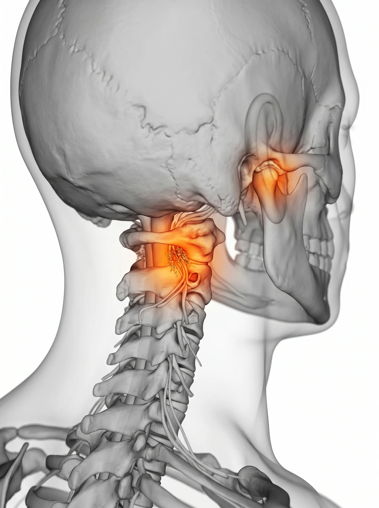
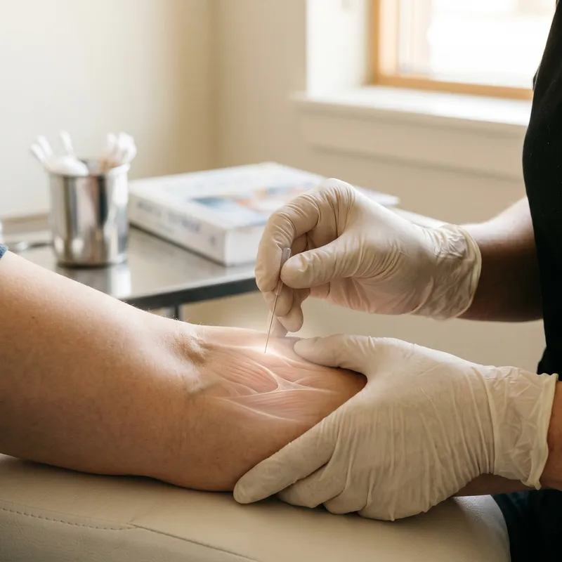
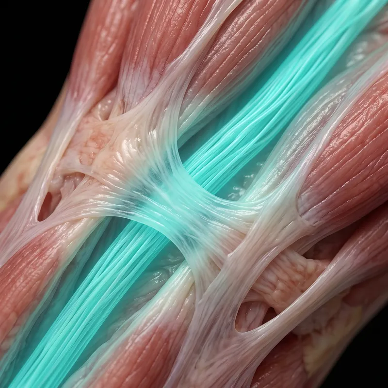

Intractable Clinic — TMJ
턱의 불편함,
단순한 관절의 문제가 아닙니다.
턱관절은 전신 균형의 스위치입니다.
수많은 임상 경험을 통해 통증의 심부 원인을 찾아내어,
턱과 경추의 무너진 밸런스를 체계적으로 회복시킵니다.
Symptoms Classification
나를 괴롭히는
턱관절의 신호
인지하지 못한 사소한 불편함이 쌓여 만성 통증이 됩니다. 턱관절은 전신 균형의 스위치와 같습니다.
개구 장애(Limited Opening)
입을 벌릴 때 손가락 3개가 들어가지 않거나, 턱이 걸리는 느낌이 드는 상태입니다. 하품할 때 '뚝' 소리가 나기도 합니다.
관절 잡음(Joint Clicking)
입을 벌릴 때 '딱' 소리나 모래 갈리는 소리가 들립니다. 방치 시 점차 개구 제한과 통증으로 악화될 수 있습니다.
방사통(Referred Pain)
턱의 통증이 두통, 목 통증, 심지어 귀의 통증(이명)으로 번지는 느낌을 받습니다. 이는 뇌신경 경로의 복합적인 영향입니다.

TMJ-Cervical Axis
Clinical Insight — Anatomy
미세한 변위가 만드는
전신 통증의 연쇄 반응
턱관절 디스크의 미세한 위치 변화는 단순히 입을 벌리는 문제에 그치지 않습니다. 상부 경추의 정렬을 무너뜨리고, 그 사이를 지나는 핵심 신경들을 자극하여 만성적인 통증의 악순환을 만드는 결정적인 트리거가 됩니다.
신경 밀집 구역
턱관절 주변은 주요 뇌신경이 집중적으로 지나는 경로로, 아주 미세한 틀어짐에도 전신적인 통증 반응을 일으킬 수 있는 예민한 부위입니다.
변위 임계점
육안으로 확인하기 어려운 미세한 디스크 위치 변화만으로도 상부 경추의 정렬을 무너뜨려 만성 통증의 악순환을 만드는 트리거가 됩니다.
System Failure Timeline
작은 소리를 방치하면
전신으로 번집니다
턱의 불편함은 조용하지만 빠르게 신체 밸런스를 무너뜨립니다.
Signal Stage
신호기
턱을 움직일 때 간헐적인 '딱' 소리와 미세한 뻐근함 발생. 대부분 일시적이라 여기고 방치하는 단계입니다.
Restriction Stage
제한기
입이 시원하게 벌어지지 않는 개구 장애와 기상 시 턱 주변의 극심한 경직 발생. 저작 시 통증이 뚜렷해집니다.
Systemic Stage ⛔
전신 전이기
만성 두통, 안면 비대칭, 경추 변형 등 전신적인 불균형으로 확산된 단계. 복합적인 교정 치료가 필수적입니다.
Targeted Solution
삼성365의원 턱관절 특화 3R Therapy
턱과 경추의 무너진 밸런스를 바로잡아 전신의 편안함을 되찾아 드립니다.

01
Release 이완
턱관절 디스크를 압박하는 저작근의 과긴장과 상부 경추의 유착 부위를 정밀하게 이완합니다.
02
Reinforcement 강화
무너진 턱관절 밸런스를 바로잡고, 이를 지탱하는 경추-두개골 지지 구조를 보강합니다.

03
Recovery 정상화
뇌신경 경로의 자극을 해소하고 전신 균형을 정상화하여 턱의 자유로운 움직임을 회복시킵니다.
"턱관절은 전신 균형의 스위치입니다. 무너진 밸런스를 바로잡아 일상의 편안함을 되찾아 드립니다."
삼성365의원 대표원장
자주 묻는 질문
턱관절 치료가 두통에도 효과가 있나요? ↓
네, 턱관절 주변의 긴장은 바로 옆 신경 경로를 통해 두통으로 직접 번집니다. 턱관절과 상부 경추를 함께 치료하면 원인 모를 두통이 극적으로 호전되는 경우가 많습니다.
소리는 나는데 아프지 않아도 치료해야 하나요? ↓
'소리'는 디스크가 제 위치를 벗어나고 있다는 초기 신호입니다. 통증이 없더라도 이 시기에 균형을 바로잡으면 추후 발생할 개구 장애나 전신 불균형을 예방할 수 있습니다.